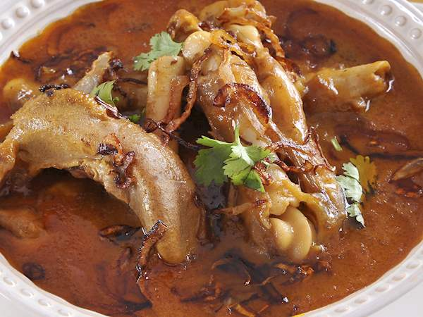

The History of Nehari-Nanruti
Mughals and their contribution to the cuisine of India makes for one of the biggest milestones in Indian culinary history. Mughal capitals, Awadh and Delhi especially witnessed some of the greatest culinary gems under their rule and governance. One such delightful and decadent dish we can't get over is Nihari. Nihari is a stew based dish, made by slow cooking meat along with the bone barrow. Nalli Nihari with Khameeri Roti till date makes for one of the most loved traditional breakfasts of Old Delhi. The origin of Nihari dates back to the 17th-18th century. Historians claim that Nihari was developed in Old Delhi, while some say it was of product of the finest Awadhi khansamas and took. its final shape in the kitchens of old Delhi.
Nihari is also said to be an off-shoot of the Indo-Persian influence in the food, that was brought in by the Mughals. Noted author and activist Sadiya Dehlvi tells us, "While Delhi has enjoyed a hearty mélange of food since the Delhi Sultanate, the refinement came with the Mughals. The rich Mughlai spread with its Persian nuances tempered with Indian tastes and flavours spelt magic. It was during this time that Delhi's cuisine really began to emerge as one of the richest culinary fares across the world. Executive Sous-Chef of Delhi Pavillion, Chef Kusha Mathur while telling us how the Awadhi spread is quite different from that of Delhi said. "It is all about the play of ingredients and spices. There are marked differences in Delhi's non-vegetarian fare. Delhi's Nihari, for instance, is more reddish-orange as compared to Awadh's lighter and slightly yellower variant. So, there is definitely a difference, the difference that persisted and evolved over the years and became unique to Delhi."

The word 'Nihari' originates from the Arabic word "Nahar" which means "morning". It was originally eaten by Nawabs in the Mughal Empire as a breakfast item after their morning prayers (Fajr). After a hearty breakfast of Nihari, the Nawabs would take a nap till afternoon, when they would wake up for afternoon prayers. It was only down the years, that Nihari became the favourite of the masses and the Mughal army, who would consume the stew for its energy-boosting properties and wade through the wintery-mornings of Delhi. Traditionally, Nihari was prepared overnight for 6-8 hours, in large pots for working class laborers, who were involved in construction of Mughal forts and palaces. It was served to labourers the first thing in the morning, for free. There's also a rather interesting practice followed in some restaurants of Old Delhi. A few kilos from each day's leftover Nihari is added to the next day's pot. This re-used portion of Nihari is called Taar and is known to add a unique and rich spicy flavour to the freshly cooked Nihari. There are some Nihari outlets in old Delhi that still boast of an unbroken 'taar', which can be traced back over a century! Nihari was also used as a home remedy for common cold and fever by the noted hakims of the walled city.